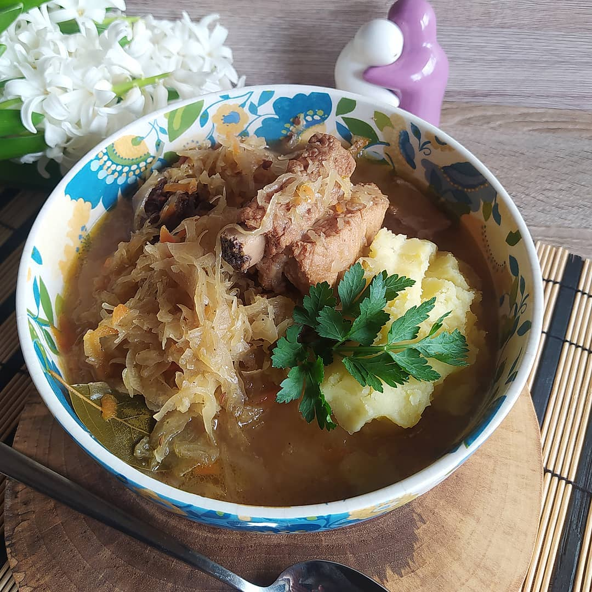

Kapusta podľa @anna_od_strony_kuchni — Normy Jedál
Kapuśniak na żeberkach z ziemniakami...... Ale pysznie😋💓👌Lubicie taki zestaw? Ja bardzo.... bo jest mega pyszny, prosty przepis, no i samo się robi😋🤪😁
Kiszona kapusta(ok.1,5 kg) odciśnięta z nadmiaru soku(soku nie wylewam w razie konieczności w trakcie dolewam, kapuśniak musi być kwaśny😁) Zalałam wodą dodałam zeszklone na oleju pokrojone w piórka 2 cebule, 1marchew startą na tarce na grubych oczkach, 1 kg żeberek pokrojonych na porcje, liście laurowe-6sztuk, ziele angielskie - 8 kulek, 1/2 łyżeczki kminku, kilka grzybków suszonych, kilka śliwek suszonych, pieprz, 2 kostki rosołowe. Gotowałam pod przykryciem do miękkości mięsa, doprawiłam do smaku solą i pieprzem. Podałam z ziemniakami... Równie dobrze smakuje z pieczywem.
#obiad #dinnertime #kapuśniak #nażeberkach #kapuśniaknażeberkach #pyszne #kapustakiszona #kiszonka #żeberka #kuchniapolska #mojegotowanie #lubięgotować #lubięjeść #jemy #wiemcojem #gotowaniezpasją #foods #jedzenie #pysznejedzenie #dieta #dietabezdiety #smwcznie #kapusta #meal #posiłek #pysznyposiłek